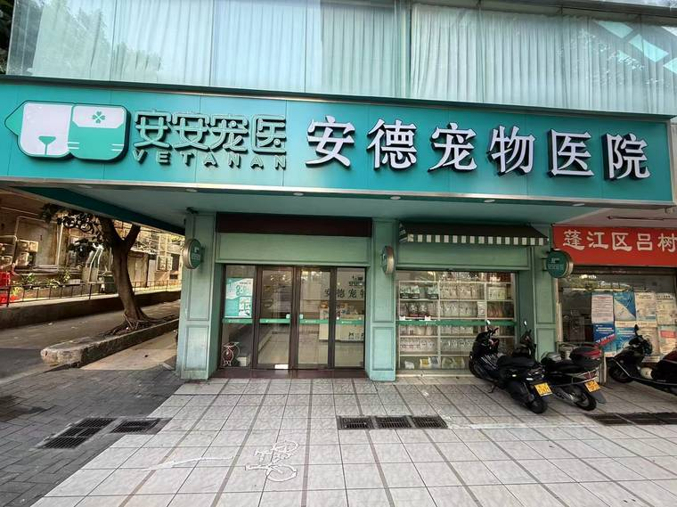

宠物诊疗的费用由手术/操作本身、术前检查、麻醉、术中耗材、术后用药几部分相加构成。同一台手术在不同体重、不同体况、不同麻醉方案下，总费用可能相差很大，单独看某一项的挂牌价很容易被误解成「总价」。
因此本站不公布碎片化的单项报价。需要了解预估费用，请致电门店或到院，由医生评估宠物情况后给出包含各项的明细。

以下为本店美团店铺页「团购」频道在售的套餐，套餐名与到手价照录平台原文（2026-10 核对）。到手价为平台活动价，会随活动浮动；划线价为平台标示的集团建议零售基准价，不是门店实收价。下单前请在美团本店页面核对适用门店、使用时段与适用体重。
| 套餐名称 | 到手价 | 划线价 |
|---|---|---|
| 猫咪·经济/基础绝育术后住院护理1天-到店服务 | 50 元 | 划线 110.00 |
| 猫咪·经济/基础绝育术后住院护理3天-到店服务 | 149 元 | 划线 330.00 |
| 【流浪公猫】·公益绝育·活动门店可用 | 199 元 | 划线 1422.00 |
| 公犬绝育经济款≤5kg-中山江门湛江（呼吸麻醉） | 199 元 | 划线 1462.00 |
| 公猫·呼吸麻醉·绝育套餐 | 199 元 | 划线 1242.00 |
| 猫咪绝育·生化血常规检测【行标·基础保障】≤5kg | 269 元 | 划线 1812.00 |
| 犬猫通用-狂犬疫苗1针到店免疫服务-多店通用 | 45 元 | 划线 162.00 |
| 硕腾妙三多猫三联1针 | 【爆款】猫咪单针免疫 | 54 元 | 划线 120.00 |
| 狗狗疫苗｜犬疫苗单针·预防传染病疫苗·到店服务 | 59 元 | 划线 150.00 |
| 狂犬疫苗狂犬疫苗1针 | 到店服务【直播专享】 | 59 元 | 划线 162.00 |
| 猫狗通用 | 狂犬疫苗1针 | 疫苗服务【萌宠季】 | 80 元 | 划线 102.00 |
| 进口犬四联1针 | 疫苗到店服务【直播专享】 | 85 元 | 划线 112.00 |
| 【需搭配疫苗】耳道内窥镜检查-年终活动 | 4.9 元 | 划线 50.00 |
| 老伙伴-老年犬猫心脏基础检查到店服务丨多店通用 | 9.9 元 | 划线 507.00 |
| 犬猫通用-基础口腔检查到店服务丨多店通用 | 9.9 元 | 划线 130.00 |
| 人宠共患病-弓形虫筛查安心备孕到店服务丨多店通用 | 95 元 | 划线 105.00 |
| 【人宠共患病】弓形虫检查服务【直播专享】 | 99 元 | 划线 102.00 |
| 精选体检套餐（B超/X光）·到店服务 | 128 元 | 划线 640.00 |
| 犬猫通用0-4kg体内外到店驱虫1次【直播专享】 | 49.9 元 | 划线 142.00 |
| 犬猫·可立奥·体外驱虫服务1次·到店服务 | 55 元 | 划线 69.00 |
| 犬猫通用驱虫服务-可立奥-驱蜱虫&跳蚤【直播专享】 | 55 元 | 划线 107.00 |
| 猫咪0-4KG汉宠净体内外驱虫1次·赠检牙菌斑服务 | 55.9 元 | 划线 75.00 |
| 犬猫通用体内驱虫到店服务≤10KG-多店通用 | 55.9 元 | 划线 112.00 |
| 猫用大宠爱·体内外驱虫服务1次·到店服务 | 59 元 | 划线 85.00 |
| 爱宠口腔护理·单次体验·到店服务 | 9.9 元 | 划线 20.00 |
| 犬猫通用-口腔护理·单次刷牙到店服务丨多店通用 | 9.9 元 | 划线 20.00 |
| 超声波洁牙到店服务（不含麻醉）-多店通用 | 105 元 | 划线 310.00 |
| 超声波洁牙到店服务（含麻醉）≤5kg-多店通用 | 799 元 | 划线 1502.00 |
| 犬·汪宠爱内外驱虫+皮肤检查·到店服务 | 109 元 | 划线 192.00 |
| 犬·超可信/猫·博来恩体内外驱虫+皮肤检查到店服务 | 138 元 | 划线 245.00 |
| 犬猫通用-眼科基础检查服务【直播专享】 | 199 元 | 划线 281.00 |
| 犬猫耳道基础检查-到店服务-多店通用 | 19.9 元 | 划线 62.00 |
| 犬猫通用 皮肤病基础检查-到店服务-多店通用 | 19.9 元 | 划线 110.00 |
| 犬猫消化道PCR核酸检测服务【直播专享】 | 599 元 | 划线 682.00 |
| 犬猫通用-心血管全面筛查服务【直播专享】 | 1199 元 | 划线 1500.00 |
| 犬猫呼吸道PCR检测服务【直播专享】 | 699 元 | 划线 870.00 |
| 犬猫通用丨寄生虫筛查到店服务-多店通用 | 29.9 元 | 划线 95.00 |
| 新宠到家·传染病筛查6选1-到店服务-多店通用 | 124 元 | 划线 282.00 |
| 新宠到家·传染病筛查服务丨到店服务-多店通用 | 211 元 | 划线 522.00 |
| 中兽医·隔药理疗套餐（5次卡） | 439 元 | 划线 950.00 |
| 【尝鲜】关谷庄猫鲦*2条 | 1 元 | 划线 2.00 |
| 犬猫局部护理·爱宠贴心服务6选1多店通用丨到店服务 | 1 元 | 划线 30.00 |
| 【情绪舒缓】爱宠·舒缓应激·喷雾1次·到店服务 | 9.9 元 | 划线 20.00 |
| 【情绪舒缓】猫咪·抗应激·舒欣宝·到店服务 | 10 元 | 划线 15.00 |
| 犬猫局部护理·【高效去毛】去底绒浮毛（不含洗澡） | 30 元 | 划线 70.00 |
| 犬猫·健康伴侣·乳铁蛋白/舒欣宝（2选1） | 40 元 | 划线 60.00 |
| 犬猫·术后康复·湿粮罐头 | 48 元 | 划线 57.00 |
| 【新客工作日专享】狗狗基础洗浴≤6kg丨多店通用 | 60 元 | 划线 80.00 |
| 【叠加服务】短毛猫咪全身全身祛油·不含洗浴服务 | 88 元 | 划线 100.00 |
| 短毛猫咪美毛/清凉洗浴丨到·店服务1次-多店通用 | 98 元 | 划线 180.00 |
| 【尝鲜装】佩玛思特猫/犬粮1.5kg四选一 | 99 元 | 划线 129.00 |
| 短毛猫舒欣浴1次+舒欣宝2条/美舒添 2次 | 138 元 | 划线 180.00 |
代金券：200元代金券 到手 195 元、500元代金券 到手 485 元、1000元代金券 到手 960 元（三档代金券各门店通用，不与团购套餐同享优惠）。